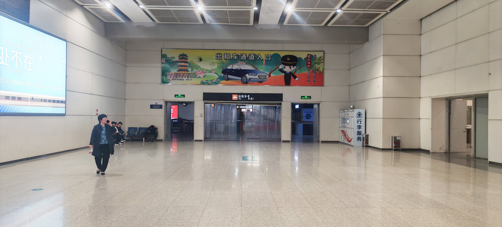
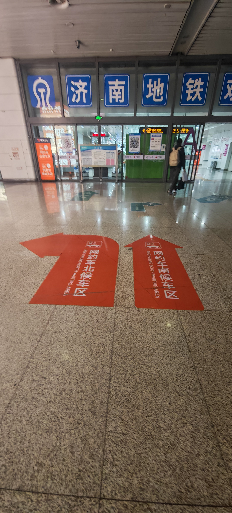
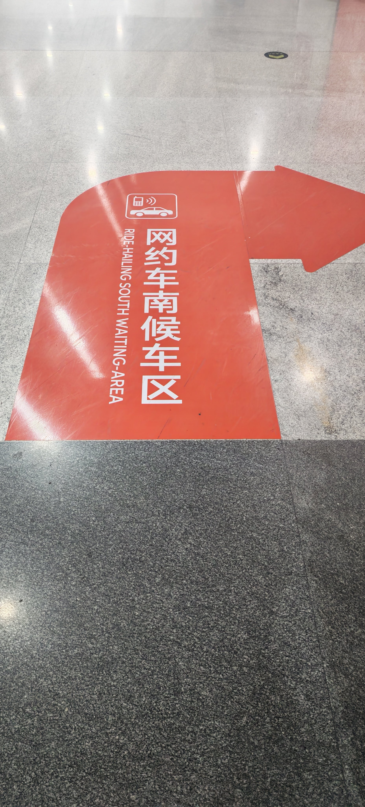
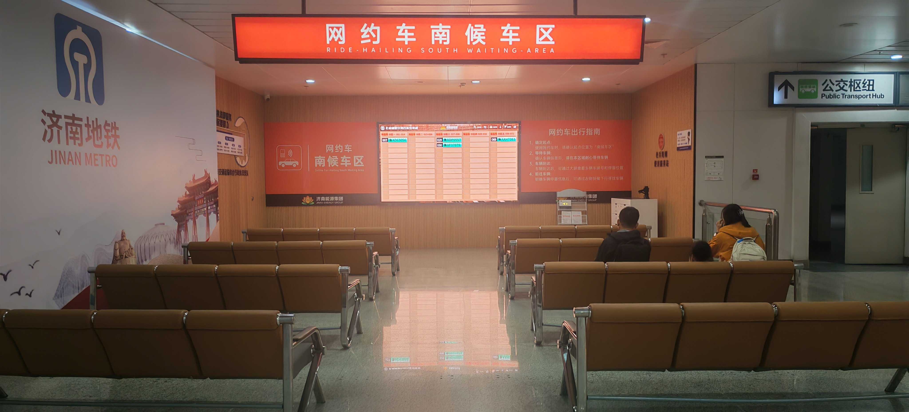
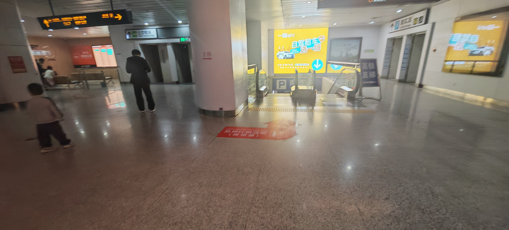
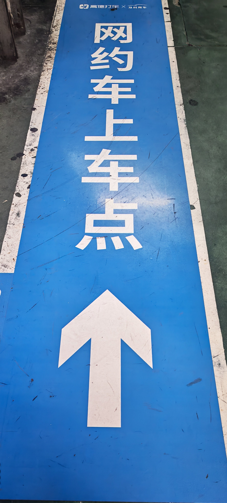

Ps:济南西站的出租车和网约车的等候地点各异，请不要弄混以免浪费时间
Ps:济南西站的出租车和网约车的等候地点各异，请不要弄混以免浪费时间
出租车
1.找到出租车的专门停靠场地
2.排队上车后告知司机目的地
前往出租车停靠场地
前往出租车停靠入口
出租车等候区入口在西出站口和东出站口的两侧都有（如下图）

济南西站出租车停靠入口
排队等候上车
新生报道时期人流量可能会大，出租车可能供不应求
出租车停靠点
目的地设定
详情请看《出租车/网约车目的地选择指南》
《出租车/网约车目的地选择指南》
网约车
1.寻找东出站口
2.跟随橙色地标指引找到网约车候车区
3.耐心等候网约车抵达后登车入校
寻找网约车后车场区
寻找东出站口
济南西站只有东出站口有着楼梯（如下图所示）

济南西站东出站口
位于东出站口右侧有通往网约车南停靠区的下行扶梯
下行扶梯
跟随橙色地表指示前往网约车候车区（如下以南候车区为例）

南候车区入口

橙色地标

南候车区
候车区内置停车位实时屏幕，可通过查看车牌号实时知晓网约车是否抵达
确定出租车等候地以及目的地
初始地
如果是在南候车区等候，那么初始地应选择“济南西站-东广场-负一层-南候车区”
如果实在北候车区等待，那么初始地应选择“济南西站东广场北网约车上车点”
目的地
详情请看《出租车/网约车目的地选择指南》
《出租车/网约车目的地选择指南》
前往网约车上车地
候车地右侧有下行扶梯，下至负一层后跟着蓝色地标指引然后登车

候车区下行扶梯

蓝色地标

南候车区上车点
警惕非法揽客与强制拼车
在出站口附近，常有司机非法揽客，请切勿理会。在非恶劣天气下，出租车队伍的移动速度很快，请耐心排队等候。
请勿轻信揽客人员的说辞，乘坐此类车辆不仅可能遇到非法运营的“黑车”，还极有可能在拥挤的车内与素不相识的陌生人强制拼车，您的乘车体验和人身财产安全均无法得到保障。